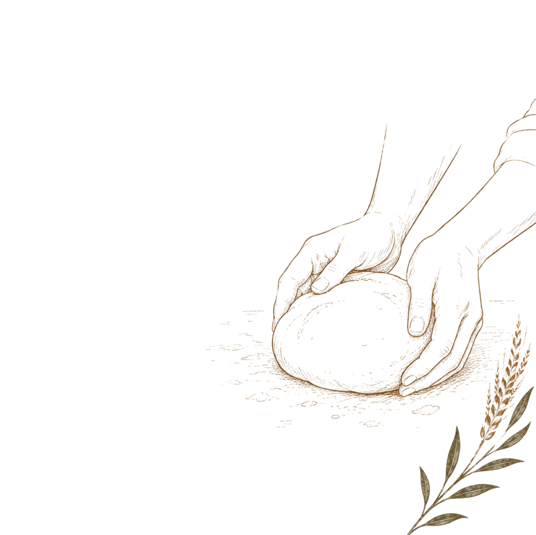
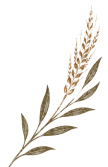

Pão Artesano Simples
Aproximadamente 400gMassa enriquecida com ovo e leite, que resulta num miolo extremamente macio e levemente adocicado. Casca fina, interior fofo: o tipo de pão que rende fatia atrás de fatia sem perceber.
Nada que vale a pena se apressa.
Ver CardápioA Marca
Sankofa é um princípio filosófico africano que significa "voltar e buscar". Ele nos ensina que, para seguir em frente com sabedoria, é preciso olhar para trás e resgatar aquilo que é valioso — preservando nossas raízes e aprendizados.
Na panificação artesanal, esse princípio se manifesta no respeito ao tempo, aos processos e às receitas que atravessam gerações. Cada pão nasce de um ciclo que não pode ser apressado: origem, preparo, fermentação, forno e partilha.

Cardápio
* Valores em atualização — em breve os preços definitivos.

Massa enriquecida com ovo e leite, que resulta num miolo extremamente macio e levemente adocicado. Casca fina, interior fofo: o tipo de pão que rende fatia atrás de fatia sem perceber.
A mesma massa enriquecida e macia, recheada com calabresa suave espalhada em cada fatia. O contraste entre o miolo aveludado e o sabor defumado da calabresa é o que faz esse pão desaparecer rápido.
Massa enriquecida com ovo e leite, com gotas de chocolate distribuídas por toda a extensão. Miolo macio, sabor equilibrado: doce o suficiente pra virar sobremesa, leve o suficiente pra virar café da manhã.
Massa de fermentação longa, com alvéolos generosos e uma base leve por dentro e crocante por fora. Coberta com mussarela derretida e tomates cereja assados, trazendo frescor e acidez a cada mordida.
Base de fermentação longa, macia e aerada, coberta com mussarela e pepperoni que assam junto até a borda dourar. Clássico reinventado com o cuidado da nossa massa.
Gorgonzola incorporado à massa de fermentação longa, que perfuma e aprofunda o sabor desde a primeira mordida. Por cima, mais gorgonzola encontra o doce do mel puro: um contraste que pede vinho, ou só um café bem forte.
Alho e provolone na massa de fermentação longa, criando uma base intensa e aromática. Finalizada com mais alho frito e parmesão por cima: simples, direta e viciante.
A mesma fermentação longa das focaccias salgadas, aqui virando base para cacau na massa e pedaços de chocolate ao leite derretido. Doce, densa e surpreendente: pão e sobremesa em uma coisa só.